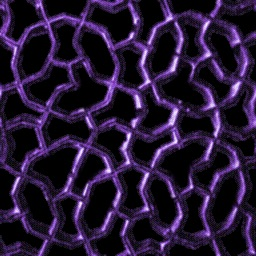
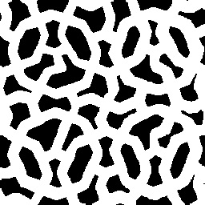

Lesson 20 - Alpha Masking with Textures
This lesson is very short because three.js does alpha-masking automagically. We start off the same as previous lessons by initializing the GFXScene object.
var gfxScene = new GFX.Scene( { cameraPos : [3, 5, 10],
controls : true,
axesHeight:10,
displayStats:true});The we call call initializeDemo() which in turn calls makeMesh() and sets up a keypress listener so we can let the user switch between the two available masks. All the work gets done in makeMesh:
function makeMesh( number ) {
gfxScene.remove(mesh);
var geom = new THREE.CubeGeometry( 2, 2, 2 );
var texture = new THREE.ImageUtils.loadTexture("images/image" + number + ".jpg");
var mask = new THREE.ImageUtils.loadTexture("images/mask" + number + ".jpg");
var material = new THREE.MeshBasicMaterial( { map:texture, alphaMap:mask,
side:THREE.DoubleSide, transparent:true } );
mesh = new THREE.Mesh( geom, material );
gfxScene.add(mesh);
}Note that the first step is to remove the previous mesh (it doesn't matter if it doesn't exist). We have to do this because you can't modify a material that contains an alpha mask. Se we destroy the previous mesh and recreate it on the fly.
Then we create simple Box geometry, and leave it centered on the origin.
Then we load the textures that will be the basis for the mask. One is a actual RGB image, like this:

Note that the background is black, which is essential since if black it will be rendered as invisible since the image effectively ANDed against the mask We also load the mask itself:

which as you can see is an inverse of the colored sections of the image. Note that there are two pairs of image/masks, just make it a little more interesting.
Finally, we create the material. We tell it the "texture" should be mapped on to the material, and to use the mask as an alphaMask and we set transparent to true. This last is essentail or the masking will not take place. We also set the material to be double-side since we are going to be able to look "through" the cube.
Then we just create the mesh and added it to the scene.
And that's it! Click on this link to see the actual rendered demo in all it's masked glory!